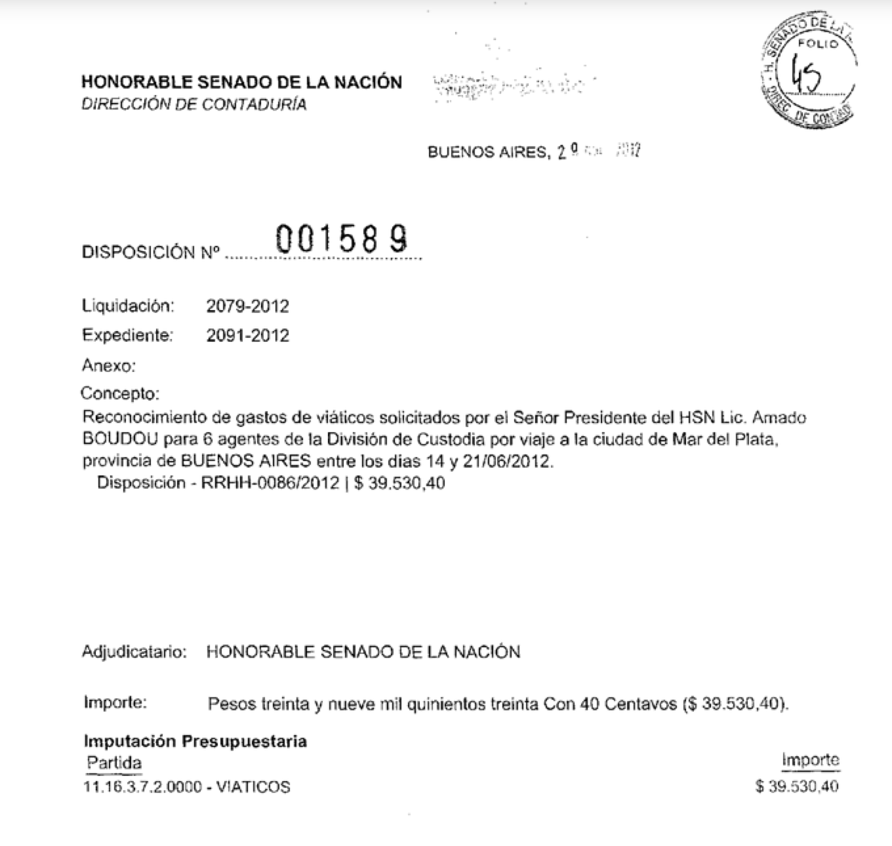

Crowdata
Open data with the help of the community
Created by Gabriela Rodríguez / @gaba
Knight-Mozilla Open News Fellow at La Nacion, Argentina
fellow at La nacion in argentina.
this is a project i have been working at the newsroom to ensure transparency in the government and convert information from pdfs to something journalists can process and use
The Problem
senate expenses

5 years of documents as scanned images
too dirty for OCR
information that our community cares about
We needed the data in good format to process it.
VozData does not only resolves this problem but also create a platform at La Nacion that will ask the help of the community to extract information from PDFs or images that are hard to process.
Platforms
inspirations
Other newsrooms have asked their communities for help with releasing data from PDFs or images before.
This is something others newsrooms have been doing before and worked as inspiration to do a similar project in Argentina.
The Guardian
MP's expenses
Data collection in 2009 from four years of expenses and claims from scanned PDFs.
the House of Commons has released thousands of MPs' receipts - 700,000 individual documents contained within 5,500 PDF files covering all 646 members of parliament.
They opened up this data to as many people as possible. They asked for help analysing it and find the great stories buried within the photocopied handwritten receipts.
Using their system the people were able to find their MP - or any member, for that matter - and look at their records directly. For every page for every MP the community was able to:
• comment on individual expenses
• highlight ones of interest
• tell them how interesting that receipt is
• Help by entering the numbers on the page
Pro-Publica
free the files
Reveal outside spending in the 2012 US elections from political ad filings from television stations in swing markets.
In the US, TV stations mantain a political file of political ad requests and contracts. It means they log who is requesting or contract advertisement for political campaigns. Pro-publica got the files from 4 TV stations.
Their goal was to increase transparency around these filings by sorting and annotating them with key data, making it easier to identify the groups buying these political ads.
Crowdata is quite similar to 'free the files' but with the added bonus of being configurable for multiple projects by the journalists that don't code.
Other features we needed
reusable code without needing custom code for each project
a ranking for the users on amount of documents checked
a way to search in the same project (To Do)
The data that needs to be extracted have to be configured by the journalist and not a programmer.
Django
administration features
Create projects and upload documents
For each project, configure the fields that needs to be extracted
Download data
Used github for the development
Download and install as any django application
Run locally
We we used postgresql (trigram search)
Questions & Comments
“There are naive questions, tedious questions, ill-phrased questions, questions put after inadequate self-criticism. But every question is a cry to understand the world. There is no such thing as a dumb question.”
THE END
BY Gabriela Rodríguez / gaba.stayover.org